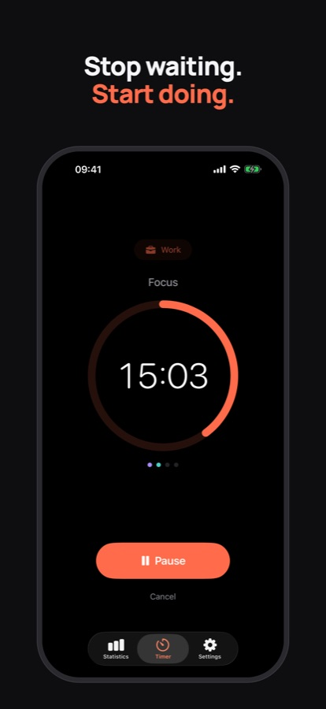
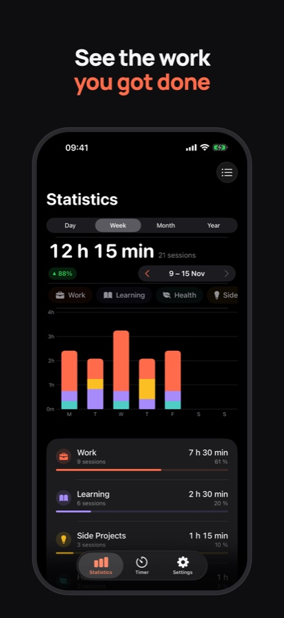

Stop waiting. Start doing.
Lapso is a focus timer for iPhone, for the things you keep putting off.


The statistics screen is shown with Premium: four themes, each with its own rhythm.
- Pick what the session is for. Work, Learning, Health, Side Projects or Personal.
- Press Start and give it 25 minutes, nothing else. The timer stays on your lock screen and keeps counting when the app is closed.
- Take the break. Five minutes, and a longer one after every four sessions.
- See the work you got done. Every finished session counts, by day, week, month and year.
Free, forever
- The full timer: focus sessions, short and long breaks, sounds and notifications
- Two themes of your choice, which you can switch at any time
- Statistics for the last six months
- Start, pause and skip from the lock screen and the Dynamic Island
Premium
- All five themes, plus your own with a name, icon and color
- Any duration from 3 to 180 minutes, and a rhythm for each theme
- Your whole history, all the way back
Premium is available yearly, monthly or as a one-time purchase. The yearly plan starts with a free trial. If notifications are on, Lapso reminds you two days before it ends.
No account, no ads
Lapso has no sign-up, no advertising and no analytics. Your sessions stay on your iPhone, and in your own iCloud when sync is on. The developer never sees them. See the privacy policy.